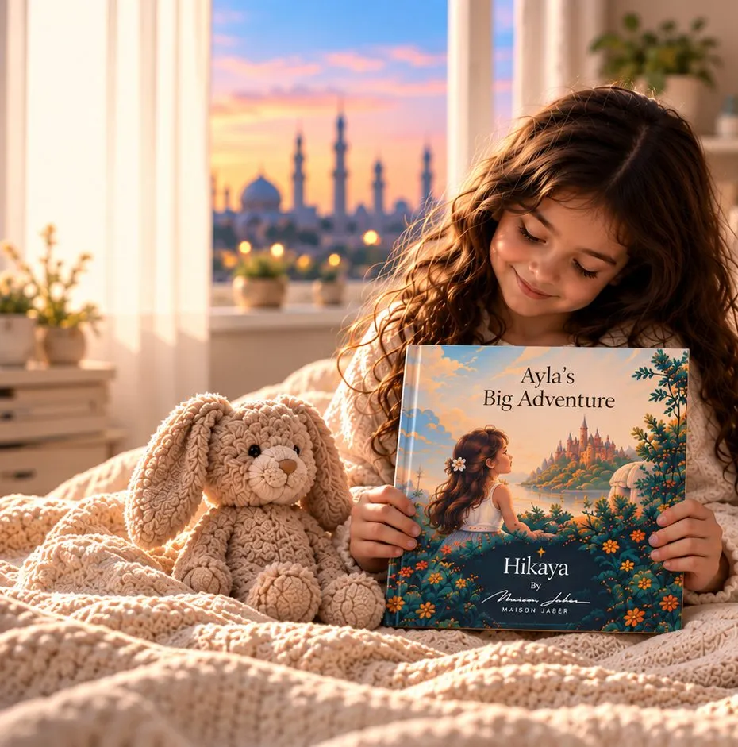

Eid gift ideas for kids: 10 thoughtful presents they'll remember
Eidiya is one of the happiest traditions of the year, and most children remember the excitement long after the money is spent. If you'd like to give something that lasts, here are ten ideas that feel special without being complicated.
1. A storybook where they are the hero
A personalised book puts the child's name and likeness on every page, so it becomes their story. With Hikaya you can choose an Arabic or English edition and write an Eid message on the first page. See our Eid and Ramadan stories.
2. An Eidiya envelope with a handwritten note
The money is exciting, but a few words from you are what gets kept. Tell them one thing you're proud of this year.
3. A new outfit for Eid morning
A classic for good reason. Let them choose one detail themselves, like the colour or a small accessory, so it feels like theirs.
4. A day out together
Make a simple voucher for a trip of their choice: the beach, a park, a museum or their favourite breakfast spot. Time together is the gift.
5. A Ramadan lantern for their room
A small lantern or string of lights becomes a yearly ritual they look forward to unpacking.
6. A craft kit to make Eid decorations
Paper, stickers and glue go a long way. They get to decorate the house and feel part of the preparations.
7. A savings jar for their Eidiya
A clear jar with three labels, spend, save and share, turns Eidiya into a first lesson in money.
8. A child-sized prayer mat
Something of their own to join the family, chosen in a colour or pattern they love.
9. A photo book of last Eid
Print the photos sitting on your phone. Children love seeing how much they have grown in a year.
10. A letter from grandparents
Ask grandparents to write down a memory from their own childhood Eid. It becomes a family keepsake.
Tip: order personalised gifts early in Ramadan
Personalised books are made to order. Hikaya delivery takes about 5 working days in the UAE and Saudi Arabia and about 7 in the rest of the GCC, so ordering in the first half of Ramadan keeps things relaxed. Delivery is free across the UAE.